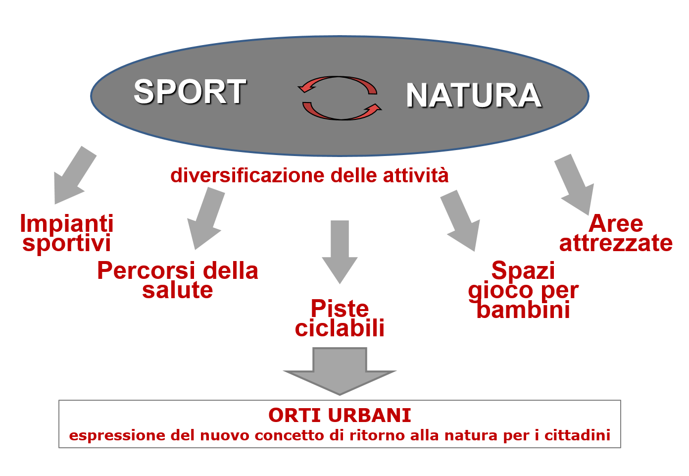

| Valore sinergico sport/natura | |
|  Il rapporto sinergico tra sport e natura si concretizza oggi attraverso una diversificazione delle attività da svolgere nel verde. Tra queste spiccano gli orti urbani, come espressione del desiderio di ritorno alla natura e di recupero dei saperi legati alla terra da parte dei cittadini |
In questa prospettiva il
Palaghiaccio, quale espressione del nuovo
rapporto sinergico sport-natura, potrebbe prevedere la
diversificazione
dell’offerta di attività, con la realizzazione non solo di impianti sportivi,
ma anche di percorsi della salute, piste ciclabili, spazi gioco per bambini
e aree attrezzate nel verde. Inoltre, oggi si registra una sempre maggiore
richiesta di orti urbani, manifestazione del desiderio di ritorno alla natura dei cittadini. È così che nelle periferie e nei vuoti urbani sono in
costante aumento le coltivazioni di prodotti orticoli (Dematteis, Lanza, 2014).
Infatti, sono sempre più numerose le amministrazioni – tra cui quella di
Bergamo – dotate di strumenti che regolano la destinazione ad orti urbani di
appezzamenti di terreno di proprietà comunale, assegnati sulla base di
specifici criteri selettivi ai cittadini che ne fanno richiesta, dietro la
stipula di specifici contratti. Le attività legate a questi
spazi risultano di particolare interesse, perché coinvolgono diverse
generazioni: gli anziani, con il recupero dei saperi agricoli tradizionali, i
bambini, attraverso attività di educazione ambientale, e le famiglie, interessate
a praticare attività colturali e sportive all’aria aperta in città. L’idea
degli orti urbani si rifà a modelli internazionali di best practice, diffusi in numerose città del mondo, tra cui Parigi,
con i suoi "Jardins Partagés", Londra, dove gli orti urbani sono presenti in
diversi parchi cittadini, oppure Berlino, dove la domanda supera di gran lunga
l’offerta, tanto che sono nate numerose associazioni come la Nomadisch Grün,
che organizza iniziative di "agricoltura mobile" creando giardini temporanei ottenuti
riempiendo cassette di plastica, sacchi di vinile o di iuta e cartoni del latte
con terra pronta per essere coltivata. Gli orti sono interessanti
perché i cittadini vogliono che la natura sia anche un modo per mettere in
mostra e tramandare i propri saperi colturali acquisiti nel tempo. |